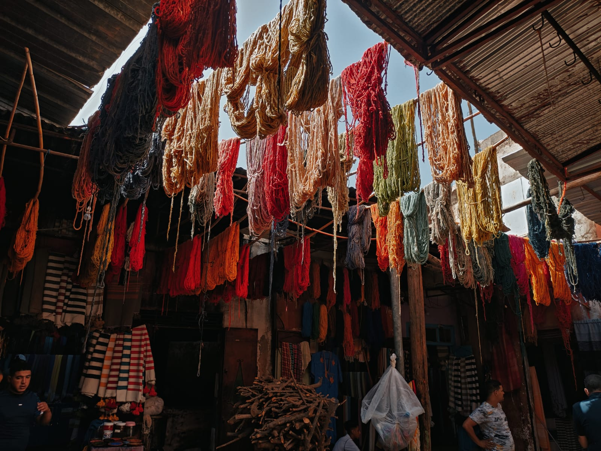
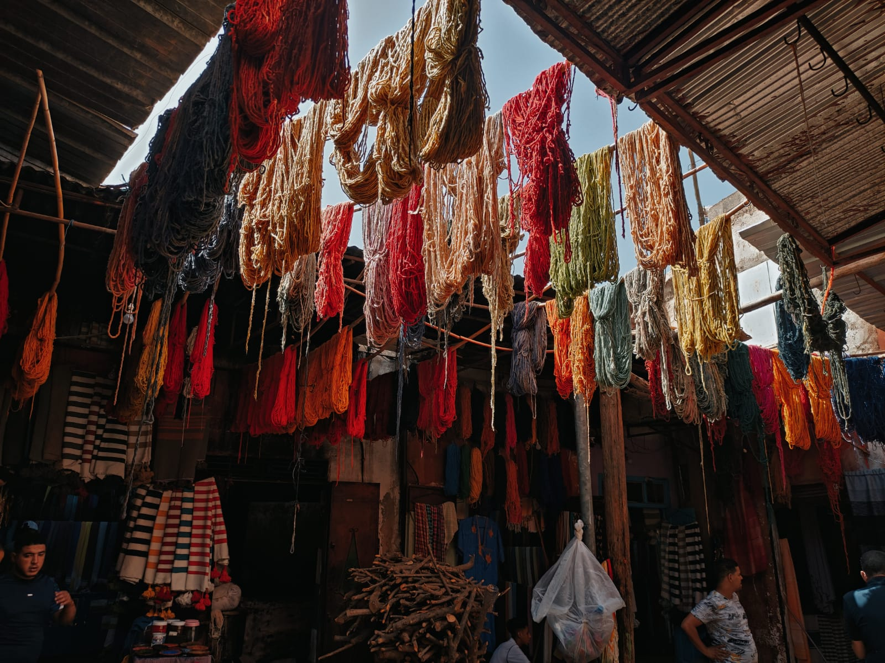

Islanda
L'Islanda ha la natura più spettacolare che abbia mai visto. Ghiacciai, cascate, vulcani e gayser trasmettono la sensazione di un luogo in cui è ancora la natura a dominare, con l'uomo che resta solo una piccola parte di quel mondo incontaminato.
Itinerario
- Visita di Reykjavik
- Viaggio itinerante di 15 gg lungo la Ring Road
Marocco
Il Marocco è un paese molto affascinante; naturalisticamente offre molti paesaggi cui non siamo abituati, a partire ovviamente da quelli del deserto del Sahara, di cui ospita solo una piccola parte.
A stupire sono anche le persone del luogo: nelle città si respira un senso di comunità e di solidarietà raro alle nostre latitudini, ed è facile interagire e legare con gente del luogo in maniera autentica.
Itinerario
- Visita alla città di Marrakech
- Visita ad Ait Benhaddou
- Escursione e notte nel Sahara
- Visita di Agadir
 

USA
Gli Stati Uniti sono un paese vastissimo di cui non ho visitato che una minima parte. Scelgo di includerli tra i viaggi più significativi per il fascino della città di New York, la cui vivacità e modernità sono irraggiungibili, e per l'esperienza nei parchi nazionali, con paesaggi mozzafiato e una natura incontaminata che ti fa sentire piccolo davanti alla sua grandezza.
Itinerario
- Visita di New York
- Visita di Washington
- Overnight trips nei parchi nazionali di Yellowstone e Yosemite